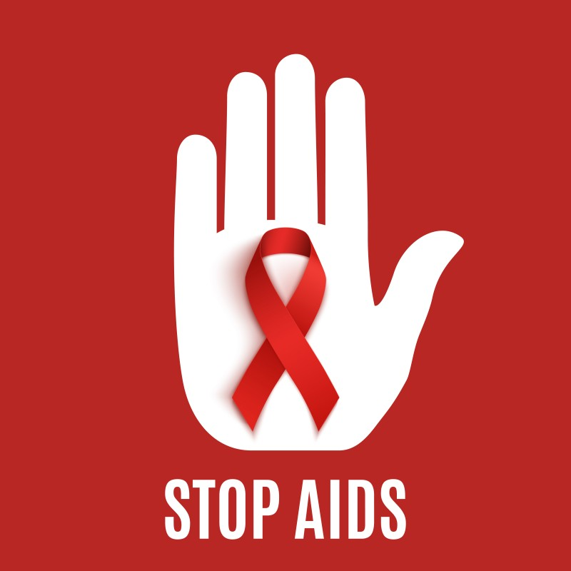
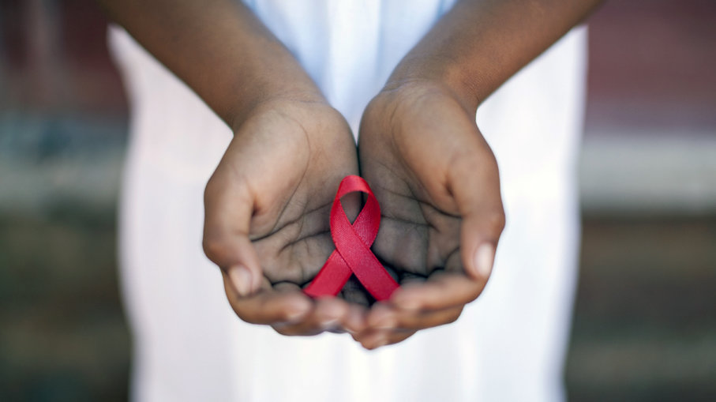
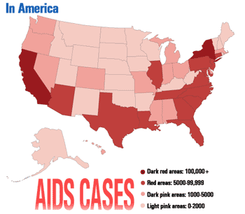
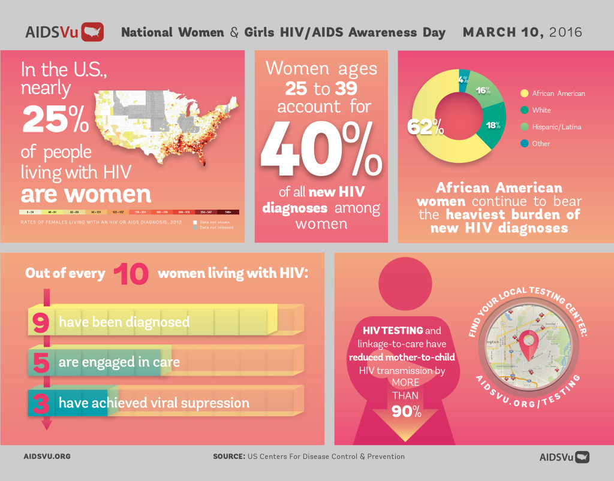
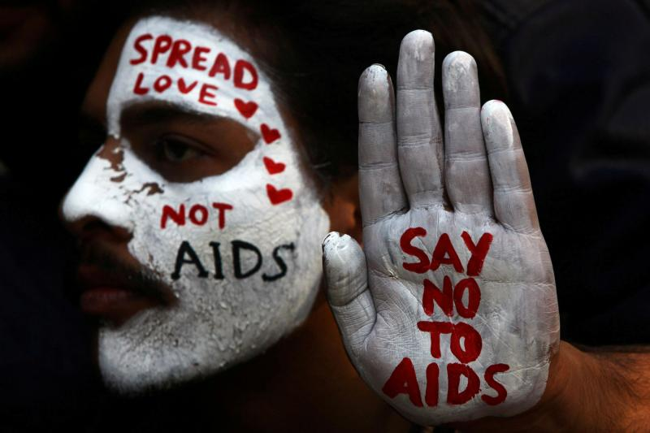
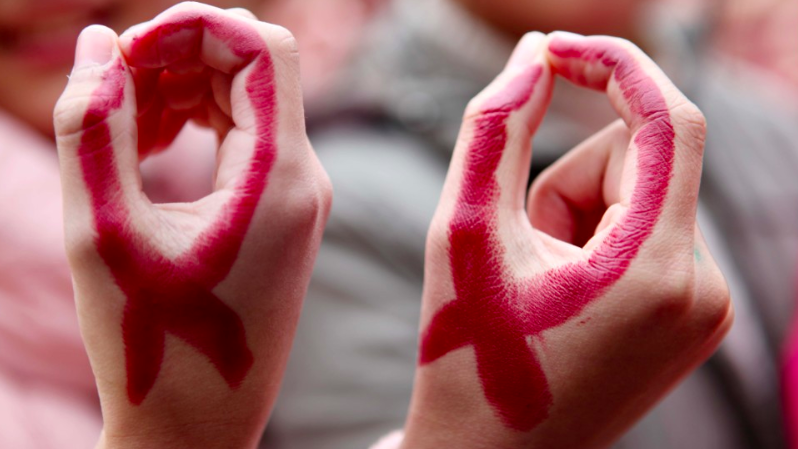

What is AIDS?
AIDS is the final, most severe stage of the sexually transmitted disease HIV. AIDS stands for acquired immune deficiency syndrome, acquired meaning you can get infected with it, immune deficiency meaning a weakness in the body's system that fights diseases, and syndrome meaning a group of health problems that make up a disease.
How is AIDS contracted?
A person cannot contract AIDS specifically, as it is a stage of HIV. However, HIV is very contagious, especially when a carrier does not know they are infected with it. HIV is most commonly transmitted sexually, but it can also be caught trough contaminated needles. The bacteria need a direct pathway into the blood stream, so coughing, sneezing, kissing, or touching will not transmit the disease.
     Is there a cure?
A cure has not yet been discovered for either HIV or AIDS. However, a treatment called ART has been developed to keep symptoms under control. ART, if taken early enough, acts as a preventative measure that stops HIV from ever progressing to the much more dangerous AIDS. ART has saved many lives, but it doesn't stop people from continuing to contract it and spread it without realizing. People need to be educated on the risks of not practicing safe sex, and how to prevent an STD.